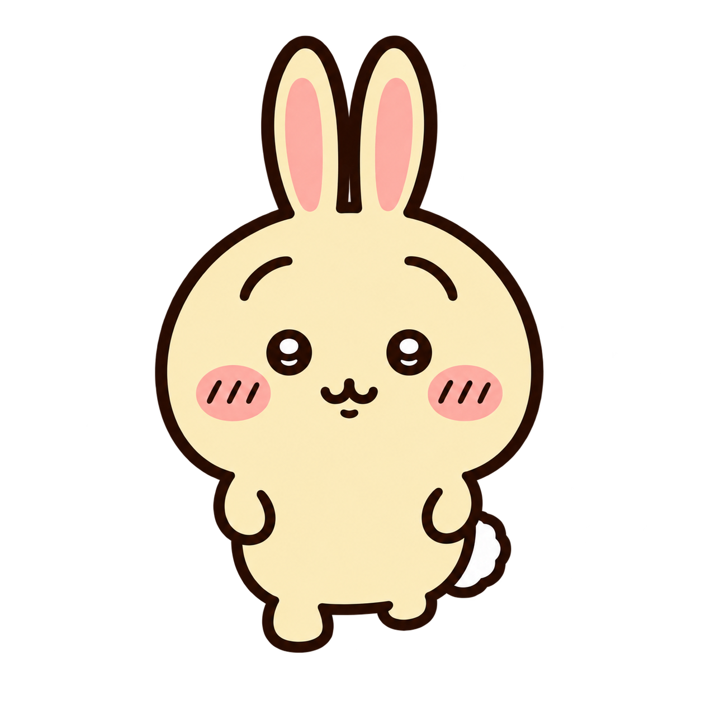

새로 제작한 정면 제자리 발동작 후보입니다. 공식 영상의 보행·타이밍 재현이 아니며 자연걷기 통과나 제품 적용을 뜻하지 않습니다. 기본 정지, 명시적 버튼으로만 재생합니다.
정지 · 01 / 08

동일1254px 캔버스를 CSS160px로 표시. 전체 불투명 너비 약89px. 원본 정렬 유지, 루트 이동 없음.
왼쪽과 동일한8PNG. 01만후광개선후보,02~06기존바이트불변,07/08추가제작. 좌표보정 없음.